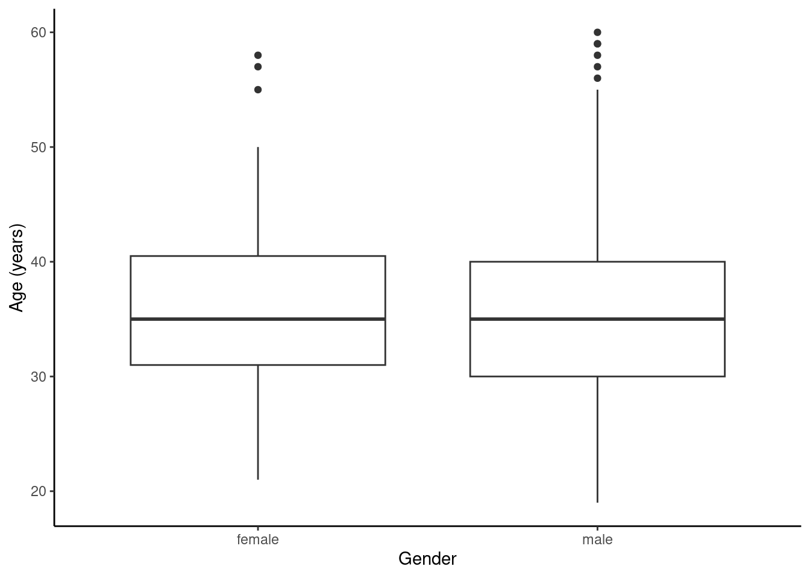
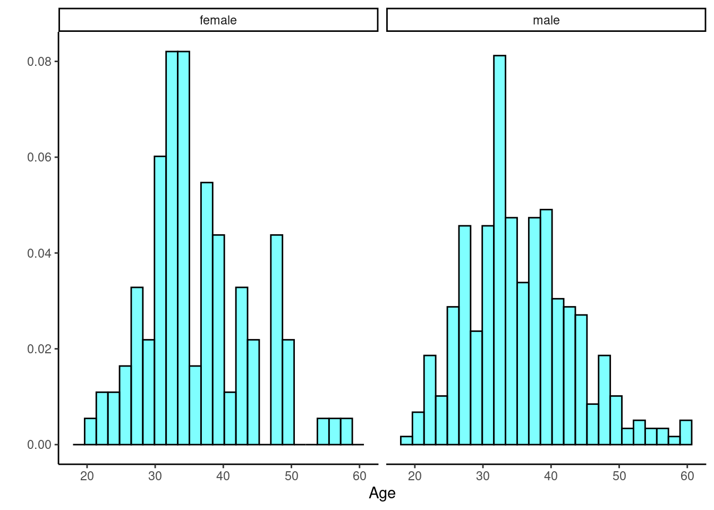
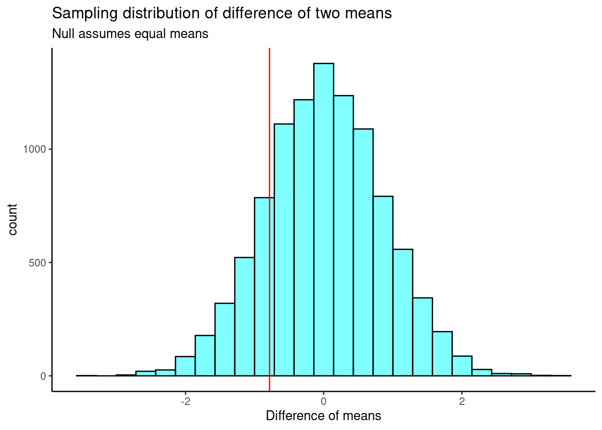
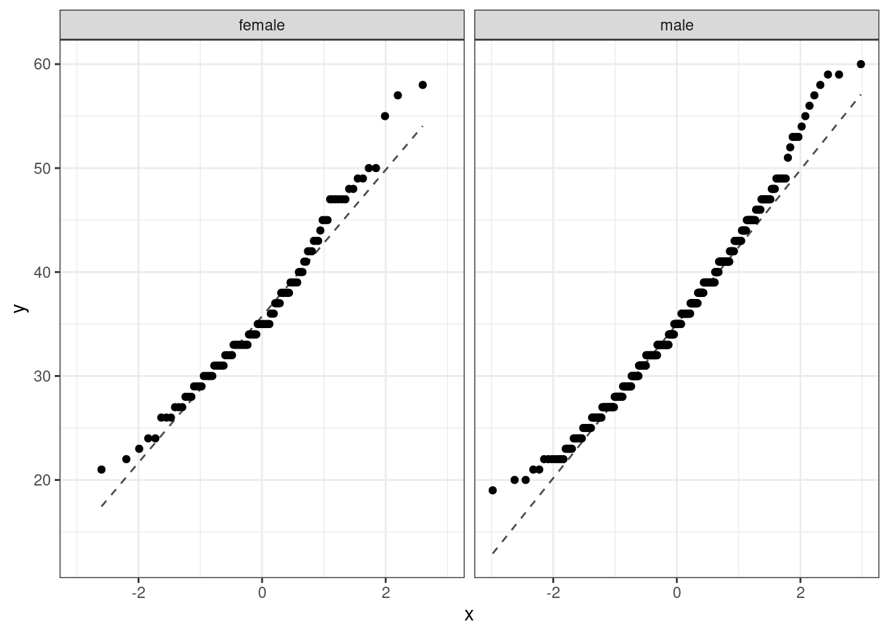
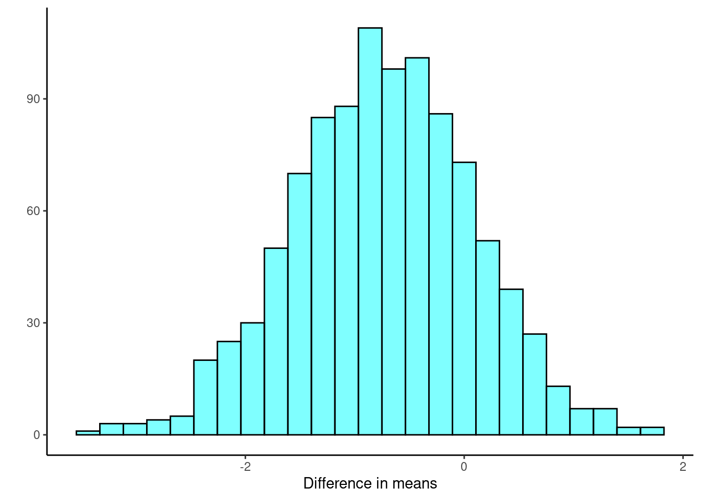

heights <- c(62.0, 73.8, 59.8, 66.9, 75.6, 63.3, 64.0, 63.1, 65.0, 67.2,
73.0, 62.3, 60.8, 65.7, 60.8, 65.8, 63.3, 54.9, 67.8, 65.1,
74.8, 75.0, 77.8, 73.7, 74.3, 68.4, 77.5, 77.9, 66.5, 65.5,
71.7, 75.9, 81.7, 76.5, 77.8, 75.0, 64.6, 59.4, 60.7, 69.2,
78.2, 65.7, 69.6, 80.0, 67.6, 73.0, 65.3, 67.6, 66.2, 69.6)25 Bootstrap
25.1 Objectives
Use the bootstrap to estimate the standard error of a sample statistic.
Using bootstrap methods, obtain and interpret a confidence interval for an unknown parameter, based on a random sample.
Describe the advantages, disadvantages, and assumptions behind bootstrapping for confidence intervals.
25.2 Confidence intervals
In Chapter 24, we introduced the concept of confidence intervals. As a reminder, confidence intervals are used to describe uncertainty around an estimate of a parameter. A confidence interval can be interpreted as a range of feasible values for an unknown parameter, given a representative sample of the population.
Recall the four general steps of building a confidence interval:
Identify the parameter you would like to estimate.
Identify a good estimate for that parameter.
Determine the distribution of your estimate or a function of your estimate.
Use this distribution to obtain a range of feasible values (confidence interval) for the parameter.
We previously used the central limit theorem to determine the distribution of our estimate. In this chapter, we will build bootstrap distributions for our sample estimates.
25.3 Bootstrapping
In many contexts, the sampling distribution of a sample statistic is either unknown or subject to assumptions. For example, if we wanted to obtain a 95% confidence interval on the mean, we know its distribution but are subject to the assumption that the underlying population distribution is approximately normal. Imagine instead we wanted to obtain a 95% confidence interval on the median of a population. The central limit theorem does not apply to the median; we don’t know its distribution.
The theory required to quantify the uncertainty of the sample median is complex. In an ideal world, we would sample data from the population again and recompute the median with this new sample. Then we could do it again. And again. And so on until we get enough median estimates that we have a good sense of the precision of our original estimate. This is an ideal world where sampling data is free or extremely inexpensive. That is rarely the case, which poses a challenge to this “resample from the population” approach.
However, we can sample from the sample. Bootstrapping allows us to simulate the sampling distribution by resampling from the sample. Suppose \(x_1, x_2, ..., x_n\) is an i.i.d. random sample from the population. First, we define the empirical distribution function of \(X\) by assigning an equal probability to each \(x_i\). Then, we sample from this empirical probability mass function. Thus, we are treating our sample as a discrete uniform random variable, and sampling from our original sample with replacement.
The general procedure for bootstrapping is to sample with replacement from the original sample, calculate and record the sample statistic for that bootstrapped sample, then repeat the process many times. The collection of sample statistics comprises a bootstrap distribution of the sample statistic. Generally, this procedure works quite well, provided that the original sample is representative of the population. Otherwise, any bias or misrepresentation is simply amplified throughout the bootstrap process. Further, for very small sample sizes, bootstrap distributions become “choppy” and hard to interpret. Thus, in small sample cases, we must use permutation or mathematical methods to determine the sampling distribution.
Once we have completed the procedure, the bootstrap distribution can be used to build a confidence interval for the population parameter or estimate the standard error. Note that we are not using the bootstrap to find \(p\)-values.
25.4 Bootstrap example
To help us understand the bootstrap, let’s use an example of a single mean. We would like to estimate the mean height of students at a local college. We collect a sample of size 50 (stored in vector heights below).
Exercise Using both a traditional method, via the CLT or the t-distribution, and the bootstrap method, find 95% confidence intervals for \(\mu\). Compare the two intervals.
Let’s look at the data. Figure 25.1 and Figure 25.2 show a boxplot and density plot of the heights, respectively.


The distribution of heights looks bimodal. There are likely both men and women in this sample, and thus we have two different population distributions of heights.
favstats(~heights) min Q1 median Q3 max mean sd n missing
54.9 64.7 67.6 74.675 81.7 68.938 6.345588 50 025.4.1 Using traditional mathematical methods
The data comes from less than 10% of the population, so we feel good about the assumption of independence. However, the data is bimodal and clearly does not come from a normal distribution. The sample size is larger, so this may help us. We will use the \(t\)-distribution and CLT, and compare our results with the bootstrap.
confint(t_test(~heights)) mean of x lower upper level
1 68.938 67.1346 70.7414 0.95We can also calculate the confidence interval by hand.
## Using t
xbar <- mean(heights)
sd <- sd(heights)
n <- length(heights)
tval <- qt(0.975, n - 1)
xbar + c(-1, 1)*tval*sd/sqrt(n)[1] 67.1346 70.7414If we want to use the tidyverse, we must convert heights to a data frame.
heights <- tibble(height = heights)head(heights)# A tibble: 6 × 1
height
<dbl>
1 62
2 73.8
3 59.8
4 66.9
5 75.6
6 63.3heights %>%
summarize(mean = mean(height), stand_dev = sd(height), n = n(),
ci = mean + c(-1, 1)*qt(0.975, n - 1)*stand_dev/sqrt(n))Warning: Returning more (or less) than 1 row per `summarise()` group was deprecated in
dplyr 1.1.0.
ℹ Please use `reframe()` instead.
ℹ When switching from `summarise()` to `reframe()`, remember that `reframe()`
always returns an ungrouped data frame and adjust accordingly.# A tibble: 2 × 4
mean stand_dev n ci
<dbl> <dbl> <int> <dbl>
1 68.9 6.35 50 67.1
2 68.9 6.35 50 70.7Using the CLT, we have:
heights %>%
summarize(mean = mean(height), stand_dev = sd(height), n = n(),
ci = mean + c(-1, 1)*qnorm(0.975)*stand_dev/sqrt(n))Warning: Returning more (or less) than 1 row per `summarise()` group was deprecated in
dplyr 1.1.0.
ℹ Please use `reframe()` instead.
ℹ When switching from `summarise()` to `reframe()`, remember that `reframe()`
always returns an ungrouped data frame and adjust accordingly.# A tibble: 2 × 4
mean stand_dev n ci
<dbl> <dbl> <int> <dbl>
1 68.9 6.35 50 67.2
2 68.9 6.35 50 70.7This is not much different from the results using the \(t\)-distribution.
25.4.2 Bootstrap
The idea behind the bootstrap is that we will get an estimate of the distribution for the statistic of interest by sampling the original data with replacement. We must sample under the same scheme as the original data was collected. In R, we will use the resample() function from the mosaic package. There are entire packages dedicated to resampling, such as boot, and there is a great deal of information about these types of packages online.
When applied to a dataframe, the resample() function samples rows with replacement to produce a new data frame with the same number of rows as the original. Some rows will be duplicated and others will be missing.
To illustrate, let’s use resample() on the first 10 positive integers.
set.seed(305)
resample(1:10) [1] 8 7 8 1 4 4 2 2 6 9Notice that 8, 4 and 2 appeared at least twice. The numbers 3 and 5 did not appear at all. This is a single bootstrap replicate of the data.
We then calculate a point estimate on the bootstrap replicate. We repeat this process a large number of times, 1,000 or maybe even 10,000 times. The collection of the point estimates is called the bootstrap distribution. For the sample mean, ideally, the bootstrap distribution should be unimodal, roughly symmetric, and centered at the original estimate.
Let’s generate the bootstrap distribution for our heights data.
set.seed(2115)
boot_results <- do(1000)*mean(~height, data = resample(heights))The first few rows of the results are:
head(boot_results) mean
1 68.390
2 68.048
3 67.732
4 68.534
5 70.980
6 68.424The do() function, by default, gives the column name of the last function used, in this case mean(). This is an unfortunate name as it can cause us some confusion.
Figure 25.3 is a plot of the bootstrap sampling distribution. The observed mean from our original sample is shown as a black line.

We can also look at a summary of the bootstrap distribution:
favstats(~mean, data = boot_results) min Q1 median Q3 max mean sd n missing
65.684 68.3915 68.976 69.55 72.3 68.96724 0.9040555 1000 0From here, there are two ways we can calculate a confidence interval. The first is called the percentile method, where we go into the bootstrap distribution and find the appropriate quantiles to construct a confidence interval. The second is called the \(t\) interval with bootstrap error. In this second method, we construct a confidence interval like we would using the CLT, except we use the bootstrap estimate of the standard error.
25.4.2.1 Bootstrap percentile
For a 95% confidence interval, we simply want the middle 95% of the bootstrap distribution. That is, we want the 2.5 and 97.5 percentiles of the bootstrap distribution. The function cdata() makes this easy for us by specifying the probability for the confidence interval desired.
cdata(~mean, data = boot_results, p = 0.95) lower upper central.p
2.5% 67.2197 70.7964 0.95We can also use the qdata() function, which gives the quantiles corresponding to the specified probabilities.
qdata(~mean, data = boot_results, p = c(0.025, 0.975)) 2.5% 97.5%
67.2197 70.7964 Both functions result in the same 95% confidence interval.
25.4.2.2 \(t\) interval with bootstrap standard error
Since the bootstrap distribution looks like a \(t\) distribution, we can use a \(t\) interval with the bootstrap standard error. The standard deviation of the bootstrap distribution is the bootstrap standard error of the sample mean. We will not have to divide by \(\sqrt{n}\) since we are dealing with the distribution of the mean directly. We simply find the standard deviation of the bootstrap distribution and use it as the standard error in the confidence interval.
xbar <- mean(boot_results$mean)
SE <- sd(boot_results$mean)
xbar + c(-1, 1)*qt(0.975, 49)*SE[1] 67.15047 70.78401We could of course use tidyverse but we must change the column name so that the mean column and the mean() function don’t conflict with each other.
boot_results %>%
mutate(stat = mean) %>%
summarise(mean = mean(stat), stand_dev = sd(stat),
ci = mean + c(-1,1)*qt(0.975, 49)*stand_dev)Warning: Returning more (or less) than 1 row per `summarise()` group was deprecated in
dplyr 1.1.0.
ℹ Please use `reframe()` instead.
ℹ When switching from `summarise()` to `reframe()`, remember that `reframe()`
always returns an ungrouped data frame and adjust accordingly. mean stand_dev ci
1 68.96724 0.9040555 67.15047
2 68.96724 0.9040555 70.78401Of course, there is a single built-in function to make this easier for us. The confint() function used with the bootstrap results can provide confidence intervals using both methods.
confint(boot_results, method = c("percentile", "stderr")) name lower upper level method estimate margin.of.error df
1 mean 67.21970 70.79640 0.95 percentile 68.938 NA NA
2 mean 67.15047 70.78401 0.95 stderr 68.938 1.816768 49The \(t\) interval with the bootstrap standard error is the more accurate method of calculating a bootstrap confidence interval. However, the percentile method usually results in a very similar interval and the standard error method can only be used when the bootstrap distribution is roughly shaped like a \(t\) distribution. You can learn more about bootstrap confidence intervals online.1
25.5 Non-standard sample statistics
One of the huge advantages of simulation-based methods is the ability to build confidence intervals for parameters whose estimates don’t have known sampling distributions, or when the distributions are difficult to derive.
25.5.1 Sample median
Consider the height data again. The observed sample median was 67.6. We would like to know the true median student height and use a confidence interval for the estimate. However, we have no idea of the sampling distribution of the median. We can use bootstrapping to obtain an empirical distribution of the median.
Exercise:
Find a 90% confidence interval for the median height of students at a local college.
set.seed(427)
boot_results <- do(10000)*median(~height, data = resample(heights))
From Figure 25.4, the bootstrap sampling distribution is not symmetrical so the \(t\) interval approach may not be advisable. We will still calculate the confidence interval based on both approaches to compare the results.
cdata(~median, data = boot_results, p = 0.90) lower upper central.p
5% 65.8 70.65 0.9confint(boot_results, method = c("percentile", "stderr"), level = 0.9) name lower upper level method estimate margin.of.error
1 median 65.8000 70.6500 0.9 percentile 67.6 NA
2 median 65.4648 70.1297 0.9 stderr 67.6 2.332455There is a little difference between these two methods but not as large as we may have expected. Based on the percentile confidence interval, we are 95% confident that the median student height is between 65.8 and 70.65 inches.
25.5.2 Summary of the bootstrap
The key idea behind the bootstrap is that we estimate the population with the sample. This is called the plug in principle: if something is unknown, then substitute an estimate of it. We can then generate new samples from this population estimate. The bootstrap does not improve the accuracy of the original estimate. In fact, the bootstrap distribution is centered on the original sample estimate. Instead, we only get information about the variability of the sample estimate. We are not calculating \(p\)-values, but are estimating the standard error and/or calculating confidence intervals.
Some people are suspicious that we are using the data over and over again. But remember, we are just getting estimates of variability. In traditional statistics, when we calculate the sample standard deviation, we are using sample mean. Thus, we are using the data twice. Always think of the bootstrap as providing a way to find the variability in an estimate.
25.6 Culminating example
To bring together all the ideas we have learned so far in this block, we will work an example of testing for a difference of two means. In our opinion, the easiest method to understand is the permutation test and the most difficult is the one based on the mathematical derivation, because of the assumptions necessary to get a mathematical solution for the sampling distribution. We will also introduce how to use the bootstrap to get a confidence interval.
25.6.1 HELP example
Let’s return to the Health Evaluation and Linkage to Primary Care data set, HELPrct in the mosaicData package. Previously, we looked at whether there was a difference in substance of abuse between males and females.
We are now interested in whether there is a difference between male and female ages. Let’s first take a look at the data to refresh our memory.
data("HELPrct")HELP_sub <- HELPrct %>%
select(age, sex)favstats(age ~ sex, data = HELP_sub) sex min Q1 median Q3 max mean sd n missing
1 female 21 31 35 40.5 58 36.25234 7.584858 107 0
2 male 19 30 35 40.0 60 35.46821 7.750110 346 0


Figure 25.5 and Figure 25.6 indicate there might be a slight difference in the means, but is it statistically significant?
25.6.2 Randomization test
The randomization test (approximation of a permutation test) is ideally suited for a hypothesis test. So, we will conduct this first and then see if we can generate a confidence interval.
The hypotheses are:
\(H_0\): There is no difference in average age for men and women in the detoxification unit. In statistical notation: \(\mu_{male} - \mu_{female} = 0\), where \(\mu_{female}\) represents the mean age for female inpatients and \(\mu_{male}\) represents the mean age for male inpatients.
\(H_A\): There is some difference in average age for men and women in the detoxification unit (\(\mu_{male} - \mu_{female} \neq 0\)).
Let’s perform a randomization test. The mean age by sex is again shown below.
favstats(age ~ sex, data = HELP_sub) sex min Q1 median Q3 max mean sd n missing
1 female 21 31 35 40.5 58 36.25234 7.584858 107 0
2 male 19 30 35 40.0 60 35.46821 7.750110 346 0We calculate the observed difference in the mean ages. Notice we are subtracting the mean female age from the mean male age.
obs_stat <- diffmean(age ~ sex, data = HELP_sub)
obs_stat diffmean
-0.7841284 Under the null hypothesis, there is no difference in the average age for men and women. So, we shuffle the sex labels around to generate a sampling distribution under the null.
set.seed(345)
results <- do(10000)*diffmean(age ~ shuffle(sex), data = HELP_sub)favstats(~diffmean, data = results) min Q1 median Q3 max mean sd n
-3.378154 -0.5638809 0.01120955 0.5863 3.486224 0.009350908 0.8492454 10000
missing
0The sampling distribution is centered on the null hypothesized value of 0, more or less, and the standard deviation is 0.849. This is an estimate of the variability of the difference in mean ages. The observed difference in means is shown as a red line on the sampling distribution in Figure 25.7.

Our test statistic does not appear to be too extreme. Now, we calculate a two-sided \(p\)-value.
2*prop1(~(diffmean <= obs_stat), data = results)prop_TRUE
0.3523648 Based on this \(p\)-value, we fail to reject the null hypothesis. There is not enough evidence to say that the mean age for men and women is different.
Now, to construct a confidence interval based on the randomization, we have to be careful and think about this. The object results has the distribution of the difference in means, assuming there is no difference. To get a confidence interval, we want to center this distribution on the observed difference in means and not on zero. We will do this by adding the observed difference in means to the randomization results, and then find the percentile confidence interval.
cdata(~(diffmean + obs_stat), data = results) lower upper central.p
2.5% -2.449246 0.8789368 0.95We are 95% confident that the true difference in mean ages between male and female participants in the study is between -2.45 and 0.88. Because 0 is contained in the confidence interval, we fail to reject the null hypothesis. There is not enough evidence to say that the mean age for men and women is different.
Note that we are assuming the test statistic can be transformed. It turns out that the percentile method for a confidence interval is transformation invariant, so we can perform the transformation of shifting the null sampling distribution by the observed value.
25.6.3 Traditional mathematical methods
Using the CLT or the \(t\) distribution becomes difficult, because we have to find a way to calculate the standard error. There have been many proposed methods, and you are welcome to research them, but we will only present a couple of ideas in this section. Let’s summarize the process for both hypothesis testing and confidence intervals in the case of the difference of two means using the \(t\) distribution. You may recall some of the ideas for a two-sample \(t\) test (hypothesis test) from Chapter @ref(ADDTESTS).
25.6.4 Hypothesis tests
When applying the \(t\) distribution for a hypothesis test, we proceed as follows:
State the appropriate hypotheses.
Verify the conditions for using the \(t\) distribution.
For a difference of means, when the data are not paired: each sample mean must separately satisfy the one-sample conditions for the \(t\) distribution, and the data in each group must also be independent. Just like in the one-sample case, slight skewness will not be a problem for larger sample sizes. We can have moderate skewness and be fine if our sample is 30 or more. We can have extreme skewness if our sample is 60 or more.
Compute the point estimate of interest, the standard error, and the degrees of freedom.
Compute the \(T\) test statistic and \(p\)-value.
Make a conclusion based on the \(p\)-value, and write a conclusion in context of the problem and in plain language so that anyone can understand the results.
We’ve added the extra step of checking the assumptions here.
25.6.5 Confidence intervals
Similarly, the following is how we generally compute a confidence interval using the \(t\) distribution:
Verify conditions for using the \(t\) distribution. (See above.)
Compute the point estimate of interest, the standard error, the degrees of freedom, and \(t^{\star}_{df}\) (the critical value or number of standard deviations needed for the confidence interval).
Calculate the confidence interval using the general formula, \(\text{point estimate} \pm\ t_{df}^{\star} SE\).
Put the conclusions in context of the problem and in plain language, so even non-statisticians can understand the results.
If the assumptions above are met, each sample mean can itself be modeled using a \(t\) distribution. If the samples are independent, then the sample difference of two means, \(\bar{x}_1 - \bar{x}_2\), can be modeled using the \(t\) distribution and the standard error is
\[SE_{\bar{x}_{1} - \bar{x}_{2}} = \sqrt{\frac{s_1^2}{n_1} + \frac{s_2^2}{n_2}}\]
To calculate the degrees of freedom, we can use statistical software or, conservatively, use the smaller of \(n_1 - 1\) and \(n_2 - 1\).
25.6.5.1 Results
Back to the HELP data, the men and women were independent of each other. Additionally, the distributions in each population don’t show any clear deviations from normality. There is some slight skewness but the sample size reduces this concern, see Figure 25.8. Finally, within each group we also need independence. If each group represents less than 10% of the population, we are good to go on this. This condition might be difficult to verify.

The distribution of males tends to have longer tails than a normal distribution, and the female distribution is skewed to the right. The sample sizes are large enough that this does not worry us. Below are the summary statistics by sex once more.
favstats(age ~ sex, data = HELP_sub) sex min Q1 median Q3 max mean sd n missing
1 female 21 31 35 40.5 58 36.25234 7.584858 107 0
2 male 19 30 35 40.0 60 35.46821 7.750110 346 0Let’s find the confidence interval first. We use the smaller of \(n_1 - 1\) and \(n_2 - 1\) as the degrees of freedom: \(df = 106\).
(35.47 - 36.25) + c(-1,1)*qt(0.975, 106)*sqrt(7.58^2 / 107 + 7.75^2 / 346)[1] -2.4512328 0.8912328This result is very close to the interval we got with the permutation test.
Now, let’s find the \(p\)-value for the hypothesis test.
The test statistic is:
\[T \ =\ \frac{\text{point estimate} - \text{null value}}{SE}\]
\[ = \frac{(35.47 - 36.25) - 0}{\sqrt{\left( \frac{7.58^2}{107}+ \frac{7.75^2}{346}\right)}}\ =\ - 0.92976 \] We again use \(df = 106\). The \(p\)-value is:
2*pt(-0.92976, 106)[1] 0.3546079The results in R are slightly different due to the calculation of the degrees of freedom.
t_test(age ~ sex, data = HELP_sub)
Welch Two Sample t-test
data: age by sex
t = 0.92976, df = 179.74, p-value = 0.3537
alternative hypothesis: true difference in means between group female and group male is not equal to 0
95 percent confidence interval:
-0.8800365 2.4482932
sample estimates:
mean in group female mean in group male
36.25234 35.46821 Notice that the degrees of freedom is not an integer. This is because it is a weighted average of the two different samples sizes and standard deviations. This method is called the Satterthwaite approximation. Additionally, the confidence interval is slightly different because t_test() subtracted the mean age for men from the mean age for women. Still, the confidence interval and \(p\)-value lead us to the same results as before – we fail to reject the null hypothesis.
25.6.5.2 Pooled standard deviation
Occasionally, two populations will have standard deviations that are so similar they can be treated as identical. This is an assumption of equal variance in each group. For example, historical data or a well-understood biological mechanism may justify this strong assumption. In such cases, we can make the \(t\) distribution approach slightly more precise by using a pooled standard deviation.
The pooled standard deviation of two groups is a way to use data from both samples to better estimate the standard deviation and standard error. If \(s_1\) and \(s_2\) are the standard deviations of groups 1 and 2, respectively, and there are good reasons to believe that the population standard deviations are equal, then we can obtain an improved estimate of the group variances by pooling their data:
\[ s_{pooled}^2 = \frac{s_1^2\times (n_1 - 1) + s_2^2\times (n_2 - 1)}{n_1 + n_2 - 2}\]
where \(n_1\) and \(n_2\) are the sample sizes of groups 1 and 2, as before. To use this new estimate, we substitute \(s_{pooled}^2\) in place of \(s_1^2\) and \(s_2^2\) in the standard error formula, and we use an updated formula for the degrees of freedom: \[df = n_1 + n_2 - 2\]
The benefits of pooling the standard deviation are realized through obtaining a better estimate of the standard deviation for each group and using a larger degrees of freedom parameter for the \(t\) distribution. Both of these changes may permit a more accurate model of the sampling distribution of \(\bar{x}_1 - \bar{x}_2\).
Caution
Pooling standard deviations should be done only after careful research.
A pooled standard deviation is only appropriate when background research indicates the population standard deviations are nearly equal. When the sample size is large and the condition may be adequately checked with data, the benefits of pooling the standard deviations greatly diminishes.
In R we can test the difference of two means with equal variance using the var.equal argument.
t_test(age ~ sex, data = HELP_sub, var.equal = TRUE)
Two Sample t-test
data: age by sex
t = 0.91923, df = 451, p-value = 0.3585
alternative hypothesis: true difference in means between group female and group male is not equal to 0
95 percent confidence interval:
-0.8922735 2.4605303
sample estimates:
mean in group female mean in group male
36.25234 35.46821 Since our sample sizes are so large, this did not have a big impact on the results.
25.6.6 Bootstrap
Finally, we will construct a confidence interval through the use of the bootstrap. In this problem, we have to be careful and sample within each group. Compare the following two bootstrap samples.
favstats(age ~ sex, data = resample(HELP_sub)) sex min Q1 median Q3 max mean sd n missing
1 female 21 30 33 38.75 50 34.64706 6.267387 102 0
2 male 19 29 33 39.00 59 34.74359 7.833066 351 0and
favstats(age ~ sex, data = resample(HELP_sub, groups = sex)) sex min Q1 median Q3 max mean sd n missing
1 female 22 31 34 39.5 57 35.60748 6.901951 107 0
2 male 20 31 35 41.0 60 35.94798 8.039227 346 0Notice in the second line of code, we are keeping the groups the same size by sampling within the sex variable.
Now, let’s get our bootstrap distribution.
set.seed(2527)
results <- do(1000)*diffmean(age ~ sex, data = resample(HELP_sub, groups = sex))Figure 25.9 is our sampling distribution from the bootstrap.

cdata(~diffmean, p = 0.95, data = results) lower upper central.p
2.5% -2.394406 0.8563786 0.95Again, we find similar results with the percentile confidence interval.
25.7 Frequently asked questions
Are there more types of bootstrap techniques?
Yes! There are many excellent bootstrap techniques. We have only chosen to present two bootstrap techniques that could be explained in a single chapter and that are also reasonably reliable. There are many adjustments that can be made to speed up and improve accuracy. Packages such as resample and boot are more appropriate for these situations.
I’ve heard the percentile bootstrap is very robust.
It is a commonly held belief that the percentile bootstrap is a robust bootstrap method. That is false. The percentile method is one of the least reliable bootstrap methods. However, it is easy to use and understand and can give a first attempt at a solution before more accurate methods, like the standard error method, are used.
I should use 1,000 replicates in my bootstrap and permutation tests, right?
The randomization and bootstrap distributions involve a random component from the sampling process, and thus \(p\)-values and confidence intervals computed from the same data will vary. The amount of this Monte Carlo variability depends on the number of replicates used to create the randomization or bootstrap distribution. It is important that we not use too few, as this will introduce too much random noise into \(p\)-value and confidence interval calculations. But each replicate costs time, and the marginal gain for each additional replicate decreases as the number of replicates increases. There is little reason to use millions of replicates (unless the goal is to estimate very small \(p\)-values). We generally use roughly 1,000 replicates for routine or preliminary work, and increase this to 10,000 replicates when we want to reduce the effects of Monte Carlo variability.
Also, see resources like Statistical Inference via Data Science by Chester Ismay and Albert Kim.↩︎